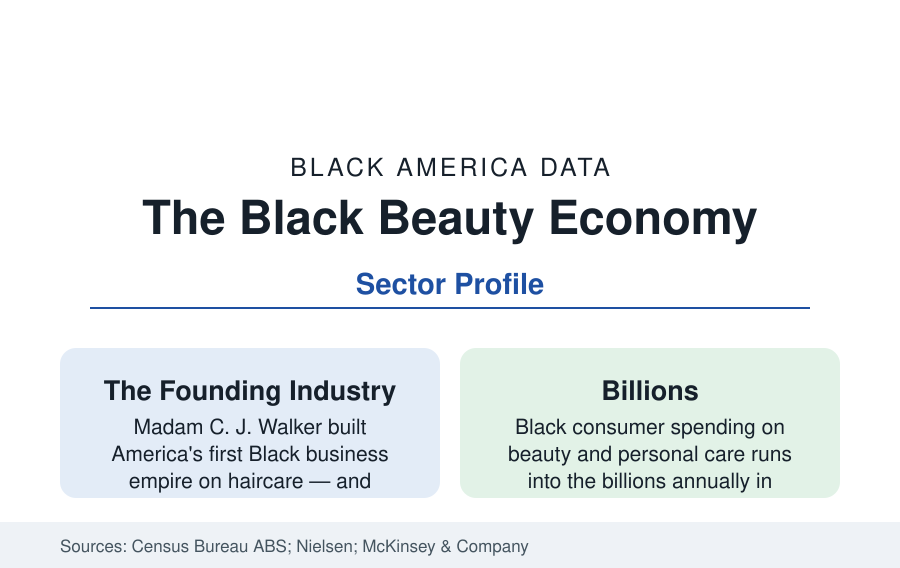

Black Business
The Black Beauty Industry: Salons, Barbershops, and a Century of Ownership
Beauty is the founding industry of Black business — from Madam C. J. Walker's empire to today's salon economy and the $2B-plus Black haircare market. The sector data.

Beauty is the founding industry of Black business in America. The first Black business empire of national scale — Madam C. J. Walker's manufacturing company, which made its founder the era's most famous Black entrepreneur and employed thousands of Black women as agents — was a haircare company. A century later, personal care services remain among the largest sectors of Black ownership in the Census data, Black consumers drive an outsized share of the beauty market's spending, and the industry's ownership question — who owns the brands Black consumers buy — is the sector's live data story.
The Service Layer: Salons and Barbershops
The Annual Business Survey and the nonemployer counts place personal care services — salons, barbershops, nail and skin care — at or near the top of Black business formation in every edition: the entry capital is low (a chair, a license, a clientele), the skill is community-held, and the institutions are load-bearing in the city profiles (the barbershop and the salon are the Black commercial district's anchor tenants and its information exchange). The employer-firm count runs into the tens of thousands with a nonemployer universe several times larger, dominated by booth-rental and suite models that blur the firm boundary in the data. The sector's economics are the service economy's: labor-priced, location-sensitive, and — in the appointment-platform decade — increasingly intermediated by booking apps whose commission and discovery data form the sector's new trade literature.
The Product Layer: The Ownership Gap
The consumer data describe the demand: Black consumers spend disproportionately on beauty — Nielsen's series have long valued Black buying in key categories (haircare, skin care, fragrance) at multiples of the population share, with Black haircare alone measured in the billions annually. The ownership data describe the gap that organizes the industry's modern politics: the shelf of products made for Black consumers was built substantially by Black founders (the Walker and Annie Malone empires, the Johnson Products and SoftSheen generation) and consolidated, across the late twentieth century, into the general beauty conglomerates — so that the iconic Black brands are today largely divisions of multinational firms, while a new founder generation (the direct-to-consumer and clean-beauty wave of Black-founded brands, several acquired in the current decade at notable valuations) rebuilds the ownership layer brand by brand. McKinsey's beauty-equity research quantifies the stakes in its terms: the Black beauty market's under-served demand and the small share of industry revenue accruing to Black-owned brands side by side.
The Supply Chain's Own Data
Between the salon and the brand sits the distribution layer, whose demographics are the industry's most contested file: the beauty-supply retail sector — the neighborhood stores selling the wigs, extensions, and products the service layer installs — is owned predominantly by Korean-American merchant networks in the trade data, a distribution structure with historical roots (the post-1965 immigration channels into wig importing) that the Black retail community's organizing (buying groups, Black-owned supply chains, manufacturer-direct movements) has contested for decades. The human-hair and synthetic extension supply chain runs through Asian manufacturing to those stores to Black salons — a global chain whose value capture at each stage the industry analyses map, and whose Black-owned alternatives form a small but tracked sector of their own.
Regulation and the Natural-Hair Shift
Two policy-and-culture files complete the sector's data. The first is licensing: cosmetology and barbering licenses are the sector's gate, and the licensing-reform literature (braiding licenses were the test case — most states have now exempted natural hair braiding from full cosmetology licensure after decades of litigation) tracks the barrier's fall. The second is the demand shift itself: the natural-hair movement of the past fifteen years reallocated billions in consumer spending from relaxers and chemical services toward natural care, braiding, and protective styles — visible in the category sales data as one of the fastest consumer reallocations in the beauty industry's record, and in the salon data as a service-mix transformation (silk presses, twists, locs, and braiding suites replacing the relaxer book). The CROWN Act legislation (banning hair-texture discrimination in employment and schools, enacted in a growing list of states) is the shift's legal deposit, tracked here as the sector's policy series.
Reading the Beauty Data
Beauty is the business section's Rosetta sector: the founding empire, the anchor storefronts, the consumer billions, the ownership gap, and the cultural shift are all in its tables at once. A century after Walker, the industry's central data question is unchanged — whether the wealth Black beauty generates accrues to Black owners at the rate Black consumers generate it — and the current founder wave is the market's latest answer being graded in real time.
More in Black Business
Black-Owned Businesses: Counts, Receipts, and the Representation Gap
About 161,000 Black-owned employer firms and three million solo ventures: how the Census Bureau counts Black business ownership, where firms concentrate, and the gap between population share and business share.
Black Median Net Worth: The Wealth Gap in Federal Reserve Data
The Federal Reserve puts Black median family net worth at $44,900, against $285,000 for White families — about 16 cents on the dollar. The widest gap in economic data.
Black Buying Power: The $1.8 Trillion Consumer Economy
Black buying power is estimated at about $1.8 trillion — larger than the economy of most nations. What the figure measures, who produces it, and what it buys.
Source: U.S. Census Bureau, Annual Business Survey and Nonemployer Statistics; Nielsen and McKinsey Black consumer and beauty industry research.